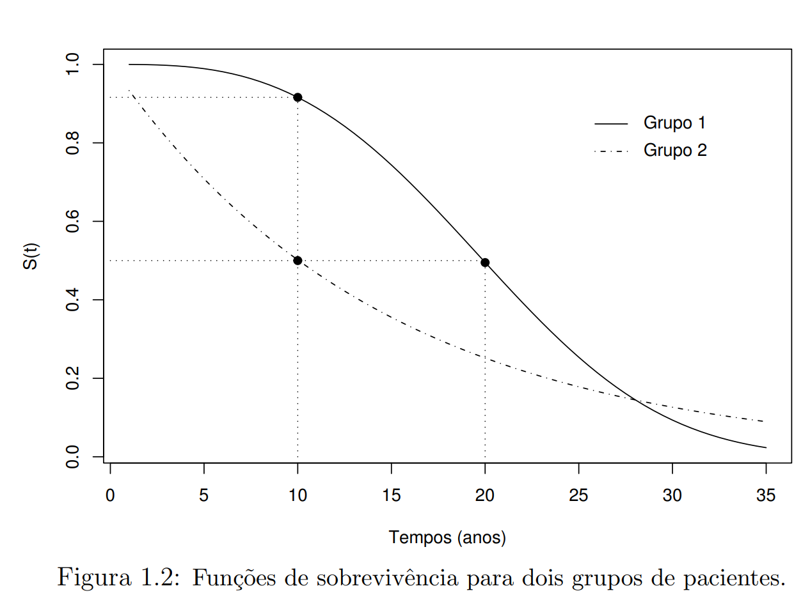
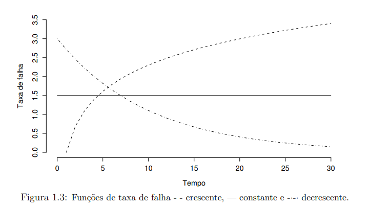
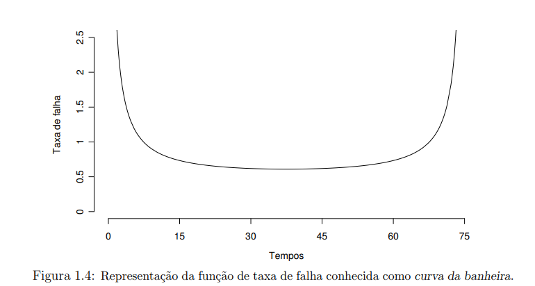

Resumo do livro: Análise de Sobrevivência Aplicada
Capítulo I
Introdução
Em análise de sobrevivência a variável resposta é o tempo até a ocorrência de um evento de interesse.
Principal característica de dados de sobrevivência é a censura, onde:
- Há observação parcial das repostas;
- Seja pelo interrompimento do acompanhamento do paciente;
- Pelo término do estudo para análise;
- Ou o paciente morreu por causa diversa da estudada.
Sem censura, se utilizaria as técnicas estatísticas clássicas para análise destes tipos de dados, mediante a transformação para as respostas.
E havendo presença de censura, nesses casos, utiliza-se métodos de análise de sobrevivência, pois:
- Possibilita incorporar na análise estatística as informações dos dados censurados.
Objetivo e Planejamento dos Estudos
Nos objetivos, o autor1 define o que são estudos clínicos: investigação científica com objetivo de provar ou não uma determinada hipóteses de interesse. Em geral esses estudos são divididos em três etapas:
- Formulação da hipótese de interesse.
- Planejamento e coleta de dados.
- Análise estatística dos dados para validar ou não a hipótese formulada.
Objetivo e Planejamento dos Estudos
Em análise de sobrevivência a resposta é por natureza longitudinal.
Se dá pelo acompanhamento observado ao longo do tempo.
Objetivo e Planejamento dos Estudos
Formas básicas de estudos clínicos
Descritivo:
Apenas uma amostra;
Sem grupo de comparação;
Com o objetivo de identificar fatores de prognótico para doenças em estudo.
Caso-controle:
Compara dois grupos: caso (doentes) e controle (sudáveis);
Sofre limitação por estar sujeito a vícios. Como a escolha do grupo controle.
Objetivo e Planejamento dos Estudos
Formas básicas de estudos clínicos
Coorte:
- Acompanha o tempo de exposição de dois grupos: expostos e não-expostos ao fator de interesse;
- Avalia comparativamente os grupos no início do estudo;
- Podendo identificar as variáveis de interesse.
- Desvantagem: longo e caro.
Clínico-aleatorizado:
- Experimental;
- Existe intervenção direta do pesquisador;
- Garante comparabilidade dos grupos.
Caracterizando dados de sobrevivência
Os conjuntos de dados de sobrevivência são caracterizados pelos tempos de falha e muito frequentemente pelas censuras.
Estes dois constituem a resposta. Em estudos clínicos, um conjunto de variáveis não controladas (covariáveis) é geralmente medido em cada paciente.
Caracterizando dados de sobrevivência
Tempo de Falha
Tempo de início do estudo:
- Deve ser definido precisamente;
- Os indivíduos devem ser comparáveis na origem do estudo. Como data de diagnóstico ou início do tratamento de doença;
- Com exceção de covariáveis.
Escala de medida:
- Tempo real ou “de relógio”
Evento de interesse (falha):
Eventos indesejáveis (falhas);
As falhas são definidas como morte, recidiva ou termos ambíguos;
Caracterizando dados de sobrevivência
Evento de interesse (falha):
- O evento de interesse pode ocorrer devido a uma única causa ou mais. Sendo descrito na literatura como riscos competitivos, em que falhas competem entre si.
Sendo, no livro estudado, considerados as de única causa.
Censura e Dados truncados
Censura
Estudos clínicos que envolvem uma resposta temporal são frequentemente prospectivos e de longa duração.
Usualmente, estudos clínicos de sobrevivência tendem a terminar antes que todos os indivíduos no estudo venham a falhar.
Característica decorrente destes estudos é a presença de observações incompletas ou parciais, as denominadas censuras.
Censura e Dados truncados
Censura
Todos os dados provenientes de um estudo de sobrevivência devem ser usados na análise estatística:
- Mesmo incompleto, as observações censuradas fornecem informações sobre o tempo de vida do paciente;
- A omissão das censuras no cálculo das estatísticas de interesse pode levar a conclusões viesadas.
Censura e Dados truncados
Censura
Sendo os mecanismos de censura diferenciados em estudos clínicos e classificados como:
Censura tipo I: em que o estudo será terminado após um período pré-estabelecido de tempo;
Censura tipo II: em que o estudo será terminado após ter ocorrido o evento de interesse em um número prefixado de indivíduos.
Censura tipo aleatório: mais recorrente na prática médica. Ocorrendo quando um paciente é retirado no decorrer do estudo sem ter acontecido a falha.
Censura e Dados truncados
Censura aleatória: pode ser representada por duas v.a.
T: uma v.a. representando o tempo de falha de um paciente;
C: uma v.a. independente de \(T\), representando o tempo de censura associado a este paciente.
\[ t = min(T,C) \]
\[ \delta = \begin{cases} 1, \ T \leq \ C \\ 0, \ T > C. \end{cases} \]
Censura e Dados truncados

Censura e Dados truncados
Tempo de falha não conhecido precisamente, pertende a um intervalo \(T_{i} \in (L_{i},U_{i}]\), denominados de dados de sobrevivência intervalar.
A não ocorrência do evento, nestes estudos é chamado de censura intervalar:
- \(L_{i} = U_{i}\) : para tempos exatos de falha.
- \(U_{i} = \infty\) : quando o evento de interesse não acontece até o final do estudo. Sendo o tempo de falha maior que o tempo registrado. Onde ocorre a censura à direita.
Censura e Dados truncados
- \(L_{i} = 0\) : o evento já ocorreu antes do início da observação. Sendo o tempo de falha menor que o tempo registrado. Onde ocorre a censura à esquerda.
Censura e Dados truncados
Dados truncados: condição que exclui certos indivíduos do estudo. Somente indivíduos que experimentaram algum evento são incluídos.
Ex.: Pacientes diagnosticados com AIDS, a data de infecção é utilizada e o evento de interesse a ser observado é o desenvolvimento da AIDS.
Representação de dados de Sobrevivência
Para indivíduos \(i (i = 1,...,n)\) sob estudo, são representados pelo par \((t_{i}, \delta_{i})\) sendo \(t_{i}\) o tempo de falha ou censura e o \(\delta_{i}\) a variável indicadora de falha ou censura.
\[ \delta_{i} = \begin{cases} 1 \ se \ t_{i} \ é \ um \ tempo \ de\ falha \\ 0 \ se \ t_{i} \ é \ um \ tempo \ censurado. \end{cases} \]
Na presença de covariáveis medidas no i-ésimo indivíduo tais como, dentre outras \(x_{i}\) = (sexo, idade, tratamento recebido), os dados ficam representados por ( \(t_{i}, \delta_{i},x_{i}\)).
Representação de dados de Sobrevivência
No caso de sobrevivência intervalar, se tem, ainda, a representação ( \(l_{i},t_{i},u_{i}, \delta_{i},x_{i}\)) em que \(l_{i} \ e\ u_{i}\) são, respectivamente, os limites inferior e superior do intervalo observado para o i-ésimo indivíduo.
Especificando o tempo de sobrevivência
Uma v.a. não-negativa \(T\), representa o tempo de falha, usualmente especificado em análise de sobrevivência pela função de sobrevivência ou pela taxa de falha.
Função de Sobrevivência
\[ S(t) = P(T \geq t) \]
Função definida como a probabilidade de uma observação não falhar até um certo tempo \(t\), sendo a probabilidade de uma observação sobreviver no tempo \(t\).
Especificando o tempo de sobrevivência

Especificando o tempo de sobrevivência
Sendo a função de distribuição acumulada, dada por:
\[ F(t) = 1 - S(t) \]
Definida como a probabilidade de uma observação não sobreviver ao tempo \(t\).
Função de taxa de falha ou de risco
A probabilidade da falha ocorrer em um intervalo de tempo, [\(t_{1},t_{2}\)) pode ser expresso em termos de função de sobrevivência como: \[ S(t_{1}) - S(t_{2}) \]
Especificando o tempo de sobrevivência
Taxa de falha
A taxa de ocorrência de falha no intervalo \([t_{1},t_{2})\), definido como a probabilidade de que a falha ocorra neste intervalo, dado que não ocorra antes de \(t_{1}\). Sendo expresso por:
\[ \frac{S(t_{1}) - S(t_{2})}{(t_{2} - t_{1}) \cdot S(t_{1})} \]
Especificando o tempo de sobrevivência
Redefinindo o intervalo como \([t,t+\Delta t)\), a expressão assume a seguinte forma:
\[ \lambda(t) = \frac{S(t) - S(t+\Delta t)}{\Delta t S(t)} \]
Assumindo \(\Delta t\) bem pequeno, \(\lambda(t)\) representa a taxa de falha instantânea no tempo \(t\) condicional à sobrevivência até o tempo t. Sendo as taxas de falhas positivas, sem limite superior.
Especificando o tempo de sobrevivência
A função de taxa de falha de T que descreve a taxa instantânea de falha mudando com o tempo é definida como:
\[ \lambda(t) = \lim_{\Delta t \rightarrow 0} \frac{P(t \leq T < t + \Delta t \; | \; T \geq t)}{\Delta t} \]
Especificando o tempo de sobrevivência

Especificando o tempo de sobrevivência

Especificando o tempo de sobrevivência
Função de taxa de falha acumulada
Em análise de dados de sobrevivência, fornece a taxa de falha acumulada do indivíduo. Definida por:
\[ \Lambda (t) = \int_{0}^{t} \lambda(u) \; du. \]
Não possui uma interpretação direta, mas é útil na avaliação de maior interesse que é a taxa de falha, \(\lambda(t)\). Sendo na estimação não-paramétrica em que \(\Lambda(t)\) apresenta um estimador como propriedades ótimas e \(\lambda(t)\) é difícil de se estimar.
Especificando o tempo de sobrevivência
Outras quantidades de interesse em análise de sobrevivência são: o tempo médio de vida e a vida média residual.
- Tempo médio de vida: obtido pela área sob a função de sobrevivência:
\[ t_{m} =\int_{0}^{\infty} S(t) \; dt \]
Especificando o tempo de sobrevivência
- Vida média residual: definida pela condicional de um certo tempo de vida t. Ou seja, para indivíduos com idade t esta quantidade mede o tempo médio restante de vida, logo, é a área sob a curva de sobrevivência à direita do tempo t dividida por \(S(t)\).
\[ vmr(t) = \frac{\int_{t}^{\infty} (u- t)f(u)du}{S(t)} = \frac{\int_{t}^{\infty} S(u) du}{S(t)} \]
Sendo f(.) a função de densidade de T.